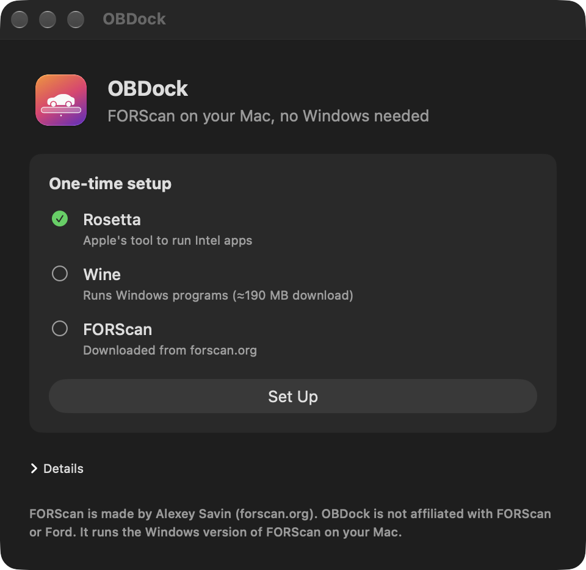
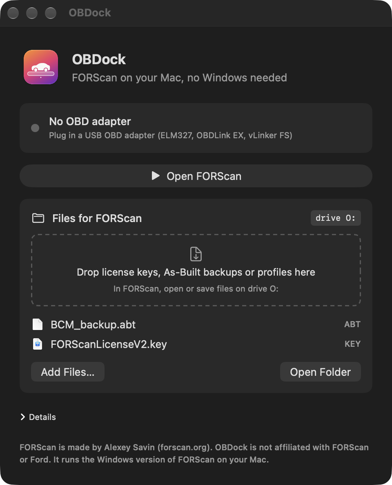

OBDock sets up everything FORScan needs on an Apple Silicon Mac, finds your OBD adapter, and opens FORScan with one click. Free.
Apple Silicon · macOS 14 or later · USB OBD adapter · v0.2.0


FORScan is a Windows app. OBDock runs it with Wine, a free layer that runs Windows programs on macOS, and connects it to your adapter.
Installs Rosetta, downloads Wine, and gets the official FORScan installer from forscan.org. You read and accept FORScan's license.
OBDock spots your USB adapter and maps it to COM1, the port FORScan expects. Changed USB ports? It remaps.
The full Windows FORScan, with its Extended license, configuration, and As-Built editing.
Drag license keys, As-Built backups or profiles into OBDock. FORScan sees them on drive O:. Anything FORScan saves to O: lands in Documents/OBDock on your Mac.
FORScan.exe ──▶ Wine (COM1) ──▶ /dev/cu.usbserial ──▶ OBD adapter ──▶ car (HS-CAN / MS-CAN)
▲
OBDock: setup, port mapping, start and stopEvery row is a real test. Tried it on your car? Open an issue on GitHub and it goes in the table.
| Car | Adapter | Reads | Writes | Date |
|---|---|---|---|---|
| 2023 Ford Taurus, Middle East Mondeo EVOS, 2.0L EcoBoost |
ELM327 v1.5 (CH340), manual HS/MS switch | ✓ 22+ modules | ✓ features added, confirmed in the car | Oct 2026 |
OBDock isn't notarized by Apple yet. To open it the first time:
USB adapters that show up as a serial port: ELM327 clones with CH340, FTDI or PL2303 chips, OBDLink EX, vLinker FS USB. Bluetooth and Wi-Fi adapters are not supported yet. FORScan may warn that a cheap ELM327 is "not recommended"; ours still read and wrote fine.
That's normal for adapters with a manual switch. Flip it and click OK in FORScan. Adapters like the OBDLink EX switch on their own.
Reading codes works with the free Standard license. Changing settings needs the Extended license (a free 2-month trial at forscan.org). The key is tied to the computer's hardware ID, so get a key for the hardware ID FORScan shows on your Mac. Drop the key into OBDock's Files box, then in FORScan open About → Load key and pick it from drive O:.
Writing settings can break a module if it goes wrong. Save a backup of each module's As-Built data first, keep a battery charger on, and don't change values you don't understand. OBDock passes FORScan's commands through and doesn't change them, but you use it at your own risk.
No. OBDock downloads the official installer from forscan.org on your Mac. FORScan's installer crashes inside Wine today, so OBDock unpacks that same installer and copies its files unchanged.
Wine needs Rosetta to run FORScan. Apple has said Rosetta stays fully available through macOS 27 and is limited after that. If a future macOS breaks it, the GitHub page will say so.